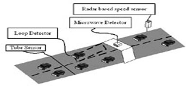
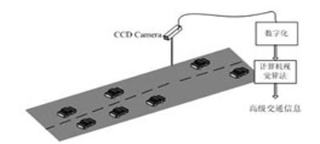
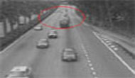
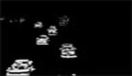
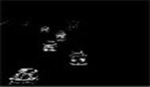
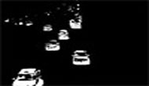
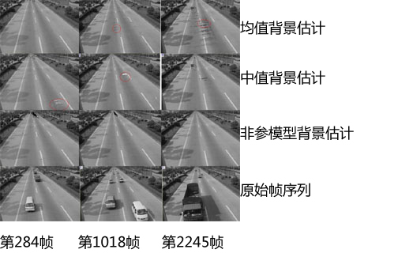
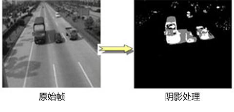
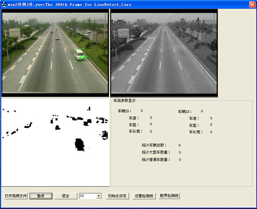
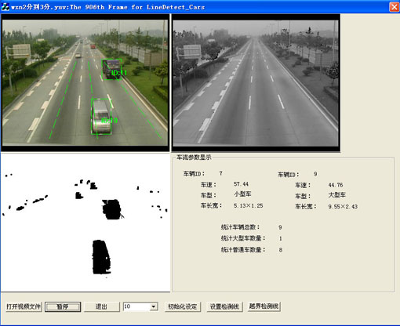

基于视频的交通信息提取技术
-
ITS（智能交通）传统检测技术主要包括：1)雷达装置； 2)微波检测装置； 3)管道（Tube）检测装置； 4)磁感应环路检测装置。

基于视觉的检测装置：1)提供的信息量大、信息较为直观； 2)相同的装置之间不发生干扰； 3)安装和维护时不影响正常的交通运转。

运动车辆检测方法： 在交通场景中，除了运动车流以及路边偶尔飘动的树枝，大部分场景几乎都是静止不变的，图像差分是进行运动车辆检测最简单而又有效的方法。其分为邻帧差分和背景差分方法。


当前处理帧两帧差分

三帧差分背景差分实验表明：背景差分能十分有效的检测出快速和缓慢的运动，甚至是静止的非背景目标。
背景提取及其自适应更新：利用相邻帧在时域和空域存在着相关性，背景提取方法几乎都是利用前后连续的多帧来进行处理。 背景提取方法：1)时域均值滤波方法； 2)时域中值滤波方法； 3)非参数模型算法。

阴影检测
运动阴影对视频车流处理影响：1)阴影与参考背景在象素灰度上有显著差别，在做背景减处理时也将检测到； 2)运动阴影具有与产生该阴影的前景运动目标一样的运动属性（如速度、方向等）。

基于视频的车辆检测系统

自动跟踪车辆

车辆轨迹自动跟踪
效果演示车辆检测示例